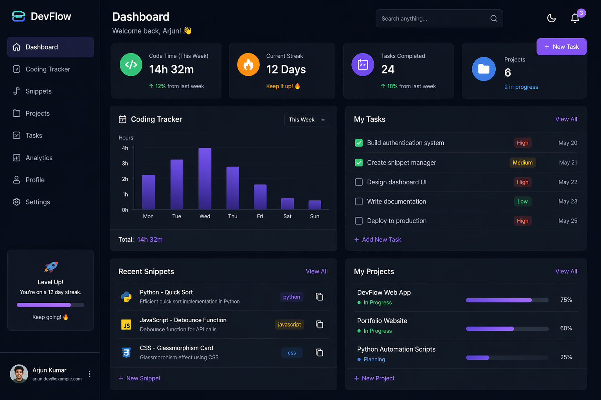
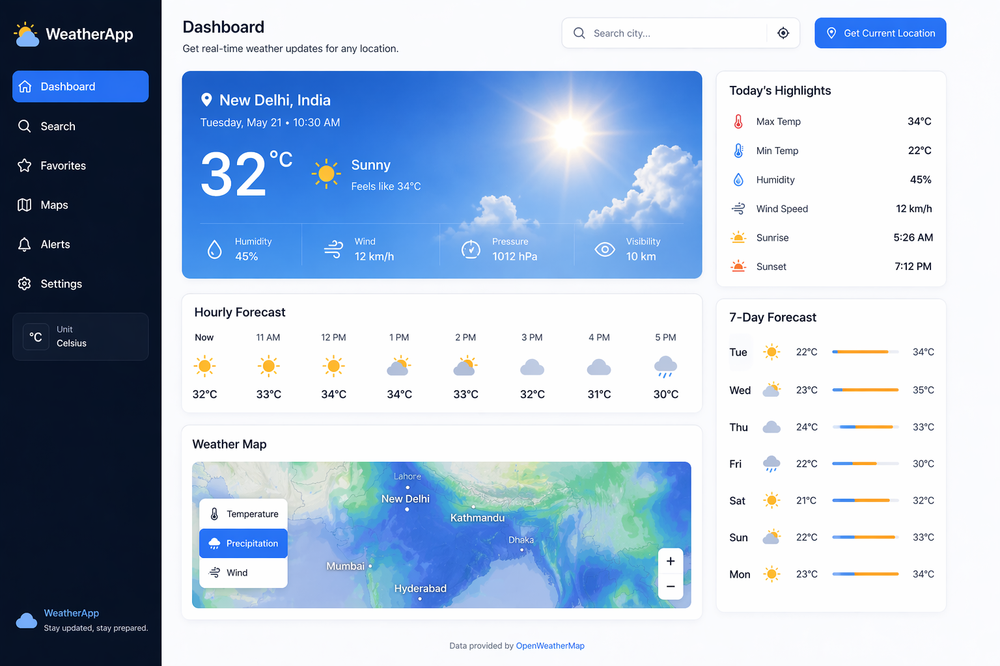
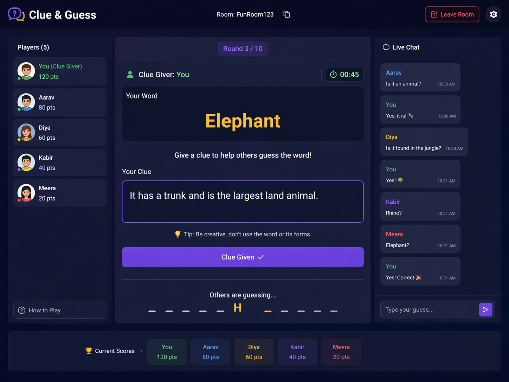

"Technically-driven developer specializing in software logic and game mechanics. With a deep proficiency in Python and JavaScript, I focus on the intersection of mathematical precision and user experience. Beyond my academic studies, I am currently engaged in a long-term technical mastery series, refining my ability to translate complex logic into high-performance applications."
I’m a BCA student passionate about building clean and functional digital experiences. I focus on web development and enjoy working with technologies like HTML, CSS, JavaScript, and Python to create responsive and user-friendly projects.
I’m constantly learning and improving through hands-on projects and challenges, aiming to turn ideas into real-world solutions. I also enjoy sharing my coding journey and experimenting with creative tech content. My goal is to grow as a developer and contribute to meaningful projects while continuously evolving my skills.
Ideas Explored
Core Languages
Project build
> styll.status
"Building the future of game logic..."
> styll.location
"Semester 05 // IGNOU"
> styll.interests
"Gaming", "Novels_reading", "UI/UX Designer"

"Build smarter, code better—DevFlow keeps your progress, snippets, and tasks in one clean workspace."

"Get real-time weather updates with clear insights—plan your day with confidence."

"Give clever clues, think fast, and guess the word before everyone else."
Mastering Pythonic principles and system-level logic in C and Lua.
Building responsive, dark-themed interfaces with modern JS and CSS.
Specializing in high-contrast "Dark Mode" aesthetics and intuitive layouts that balance logic with visual impact.
I'm currently looking for new opportunities and collaborations. Whether you have a question about logic, UI/UX, or just want to say hi, my inbox is always open.
> contact.initiate()
"Searching for available channels..."
> contact.methods
["WhatsApp", "Email", "GitHub"]